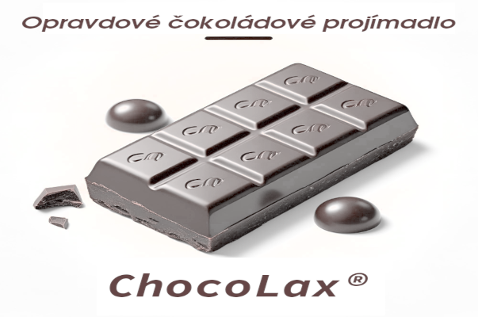

Sedelská pravda
Fakta, názory a konspirační teorie bez repelentu
Fakta, názory a konspirační teorie bez repelentu
V pondělí časně ráno bylo oficiálně oznámeno zmizení Františka Klečky (38), dlouholetého obyvatele Sedla. Podle svědectví jeho manželky se odebral do sklepa pro zavařeniny – a už se nevrátil. Sklep byl uzamčen zevnitř, bez známek násilí. Uvnitř se našly jen jeho stopy – končící u zadní stěny. Žádný východ. Žádná těla. Žádné vysvětlení.
Tato událost by mohla být považována za izolovaný případ. Nebýt ovšem skutečnosti, že během posledních dvou let zmizeli nebo zemřeli další dva lidé, kteří s panem Klečkou sdíleli více než jen trvalé bydliště ve stejné obci. Sdíleli i minulost.
Francouzská policie zaznamenala zásadní průlom v oblasti kriminalistiky. Nová identifikační technika, založená na přesném měření částí lidského těla, pomohla nedávno odhalit zločince, který se dlouhé měsíce skrýval pod falešnou identitou.
Tato metoda, známá jako bertillonáž, využívá soubor tělesných údajů – například délku nosu, šířku uší, obvod hlavy nebo délku levého předloktí – a vytváří z nich jedinečný „tělesný profil“ každé osoby.
Poprvé byla tato technika úspěšně nasazena minulý měsíc při případu muže, který byl zadržen kvůli podezření z podvodu. Při zatčení předložil doklady na jméno Louis Garnier, a nic nenasvědčovalo tomu, že by lhal.
Naše redakce získala exkluzivní informace od zdrojů blízkých táborové kuchyni. Přestože oficiální menu ještě nebylo zveřejněno, kuchyně počítá s tradičními řízky na konci týdne. Podle našich informací se jedná o oblíbenou pochoutku, která se v Sedle těší velké oblibě. „Je to klasika, kterou si každý rád dá,“ řekl náš zdroj z kuchyně. „A navíc, když je řízků hodně, zbydou i na snídani!“
Nikdo z kuchyně však nechtěl prozradit s čím se řízky budou podávat. „To je tajemství, které si necháme až do poslední chvíle,“ dodal náš zdroj.
Učitelka Jarmila Drahotová (37) tragicky zahynula při požáru zahradní chatky, kterou dlouhodobě užívala. Oheň vypukl uprostřed deště, bez elektřiny, bez zdroje vznícení. Podle svědků šla večer do chatky s krabicí starých alb a vzkázala, že „potřebuje najít jednu zapomenutou věc z dětství“. Nikdy se nevrátila. Tělo bylo nalezeno v popelu, držící nečitelný zčernalý snímek.
Oldřich Mareš (39) byl naposledy spatřen, jak v ranní mlze míří k lesům směrem ke starým pohraničním bunkrům. Jeho auto bylo nalezeno se zapnutými výstražnými světly, motor běžel, dveře dokořán, mobil v držáku. Na záznamu z palubní kamery se na pár vteřin mihne postava – snad dítěte – s podivně zastřeným obličejem. Není jasné o co vlastně šlo.
Redakce Sedelské Pravdy zjistila, že všichni tři – Klečka, Drahotová i Mareš – byli v dětství součástí skupiny místních dětí, které si v polovině 90. let často hrávaly v okolí bunkrů. Podle dosud nezveřejněných zápisků a výpovědí několika pamětníků se tehdy odehrála událost, jež nikdy nebyla vysvětlena.
Při jedné z her mělo dojít k úmyslnému zavření chlapce do bunkru. Děti měly údajně uprchnout, snad vystrašené zvuky, snad vlastním svědomím. Zavřený chlapec tam údajně zůstal několik dní. Nikdo nikdy nepodal vysvětlení. A nikdo z tehdejších aktérů o tom dodnes nemluvil.
V poklidné obci Sedlo, kde největší kriminální hrozbou býval zatoulaný jezevčík nebo občasné zcizení třešní, došlo k nečekanému odhalení.
Při rutinním přezkumu obecního rozpočtu bylo zjištěno, že obecní policie spotřebovala za pouhé tři měsíce 240 rolí toaletního papíru. Pro srovnání: místní mateřská školka spotřebuje za stejné období jen 58 rolí – a to včetně kreativního tvoření a dvou školních nehod týdně.
Policisté na první výzvu odmítli podezření z přehnané hygieny. Strážník R., muž v nejlepších letech, se hájil: „My jsme poctiví. Toaleta u nás funguje, ale že bych tam seděl osmkrát denně? To popírá fyziku.“
Na dotaz, kam papír mizel, se objevily různé teorie – od samovznícení rolí, přes nelegální export do Jindřichova Hradce, až po zřízení tajné papírové pevnosti ve sklepě služebny.
Starosta se nechal slyšet, že bude požadovat „detailní rolový audit“. Dočasně byly všechny zásoby papíru uzamčeny v trezoru městského úřadu a vydány nové směrnice o používání toaletního papíru.
Zda se jedná o pouhou byrokratickou chybu, dobře maskovanou obchodní síť, nebo zvláštní formu hygienického fetiše – ukáže čas.
Policii ale něco nehrálo – mužův obličej se nápadně podobal hledanému recidivistovi. Proto kriminalisté poprvé sáhli po nové metodě bertillonáže. Podezřelý byl pečlivě změřen a jeho rozměry byly porovnány s tajnou databází hledaných osob.
Výsledek byl překvapivý – všechny míry přesně odpovídaly muži jménem Henri Delon, který už dříve utekl z vězení a byl hledán kvůli několika případům podvodů a krádeží. Přestože měl jiný účes, jiný vous a nové doklady, jeho tělo ho zradilo. Soud přijal výsledky měření jako důkaz a muž se přiznal k podvodu a dalším trestným činům, které spáchal pod falešnou identitou.
Policie považuje případ za důkaz, že bertillonáž má velký potenciál stát se běžnou součástí kriminalistické praxe. „Je to jako tělesný otisk prstu,“ uvedl vyšetřovatel Jean Moreau.
„Každý člověk má trochu jinak dlouhé prsty, jinou šířku nosu nebo tvar uší. A to se nedá tak snadno změnit.“ Možná jsme právě svědky začátku nové éry kriminalistiky.
Sedlo, 22. června 2025 — Po dlouhých letech se do našeho milovaného Sedla vrátila slavná dvojice dobrodruhů: britský gentleman Willy Fog a jeho půvabná společnice princezna Romy. Jejich návrat způsobil doslova senzaci – na náves se přišly podívat desítky místních obyvatel, kteří chtěli na vlastní oči spatřit hrdiny, kteří procestovali celý svět za 80 dní.
Podle důvěryhodných zdrojů dorazili stylově – v parním kočáře doprovázeném pochodujícím slonem, údajně jejich starým přítelem z Indie. Willy Fog, stále dokonale upravený s kloboukem na hlavě a hůlkou  v ruce, ochotně odpovídal na otázky a rozdával autogramy. Princezna Romy po jeho boku zářila, oblečená ve splývavých šatech, které kombinovaly evropskou eleganci s orientálními prvky.
„Chtěli jsme se vrátit tam, kde naše společná cesta opravdu začala,“ prohlásil pan Fog s lehkým úsměvem. „Sedlo je pro nás místem srdce. Právě tady jsme poprvé pochopili, co znamená přátelství, odvaha a důvěra.“
Přestože své další plány tají, podle všeho zde hodlají zůstat alespoň několik týdnů. Místní radnice jim nabídla ubytování v historickém domě u lesa a obec se prý chystá uspořádat slavnostní večer na jejich počest.
Na dotaz, zda se k nim připojí i jejich věrní přátelé Rigodon a Tico, Willy Fog odpověděl tajemně: „Nechte se překvapit. Můžu jen prozradit, že Sedlo brzy uslyší nejednu melodii z harmoniky.“
Zpráva o jejich příjezdu se rychle šíří a Sedlo se tak možná znovu stane centrem úžasných dobrodružství.
Někteří se na léto těší kvůli dobrodružství a novým zážitkům. Pro pana L. to však znamená nevyhnutelnou realitu – další ročník rodinného tábora. Zeptali jsme se ho, jak se s touto "tradicí" vyrovnává.
Dobrý den, pane L. Blíží se léto a s ním i pravidelný rodinný tábor.
Jak se na něj připravujete a co je pro vás nejtěžší?
Připravuji? Spíš se smiřuji. Kdybych mohl, zůstal jsem doma v klidu, ale rodina rozhodla. Tři proti jednomu, tak je to vždycky. Nejtěžší je ten neustálý program a žádný klid.
Ráno rozcvičky, pak hry, výlety, večerní programy. No řekněte, kdo to má vydržet.
A najde se přece jen něco, co vám na táboře přináší alespoň trochu radosti?
Jasně, když se večer konečně uklidní a děti usnou, mám chvíli klidu. Nejhorší je však ta představa, že místo do postele půjdu spát do spacáku ve stanu a společnost mi budou dělat komáři a další havěť.
„Jsem slyšel, že při Černobylu zařvali jen dva lidi.”
„Jo?”
Jeden řval: „Vypni to!”
A druhý: „Nejde to!”
Místní fotbalový tým FC Sedláci již brzy přivítá na svém hřišti soupeře z dalekého města. Podle informací z klubu se jedná o velmi silného protivníka, který v posledních letech dominuje regionálnímu fotbalu. „Je to pro nás velká výzva,“ říká trenér týmu Michal Caudr. „Ale věříme, že s podporou našich fanoušků dokážeme překvapit.“
Přípravy na zápas jsou v plném proudu a fanoušci se mohou těšit na bohatý doprovodný program. „Chceme, aby to byl zážitek pro celou rodinu,“ dodává Caudr. Zápas se uskuteční v sobotu 9. srpna a vstupenky jsou již v prodeji.
Název: Sedelská pravda
Vydavatel: Sedlo Media Group, s.r.o.
Adresa: Sedlo 47, Česká republika
Email: info@sedelskapravda.cz
Telefon: +420 123 456 789
Šéfredaktorka: Karolína Bukovská
Výkonný redaktor: Michal Bukovský
Redakce: Lucie a Bohumil Borešovi
Grafická úprava: Michal Bukovský
Tisk: Česká Tiskárna a.s., Nová Bystřice
Datum vydání:
Číslo vydání:
© 2025 Sedlo Media Group. Všechna práva vyhrazena.
Jakékoli šíření obsahu bez svolení vydavatele je zakázáno.
Loňská dopingová aféra nakonec přinesla své ovoce. Mezinárodní olympijský výbor dnes oznámil, že zlatou medaili v běhu na 1000 metrů získá Michal Caudr, který původně skončil na druhém místě. Důvodem je pozitivní test Vojtěcha Bukovského, který byl odhalen až po skončení her.
Zatím není jasné, zda Bukovskému bude umožněno nastoupit do závodů na letošních hrách, které se konají začátkem srpna v Sedle. Podle informací z jeho týmu hluboce lituje svého činu a je připraven nést následky. „Je to pro mě obrovské ponaučení,“ řekl Bukovský v prohlášení. „Nikdy jsem nechtěl podvádět a teď vím, že jsem udělal chybu, která mě bude pronásledovat celý život.“
Místní atletka Lucie Borešová dnes překonala vlastní rekord v hodu kládou. Její výkon 45,3 metru je nejlepším výsledkem v historii Sedla. Borešová se stala první ženou, která překonala hranici 45 metrů.
„Jsem nadšená,“ řekla Borešová po závodě. „Trénovala jsem tvrdě a jsem ráda, že se mi podařilo překonat svůj vlastní rekord. Doufám, že to bude inspirací pro další mladé sportovkyně v našem městě.“
Borešová se nyní připravuje na nadcházející mistrovství republiky, které se koná v září. Její trenérka Karolína Bukovská věří, že Lucie má šanci na medaili. „Je to talentovaná atletka a má před sebou skvělou budoucnost,“ řekla Bukovská.